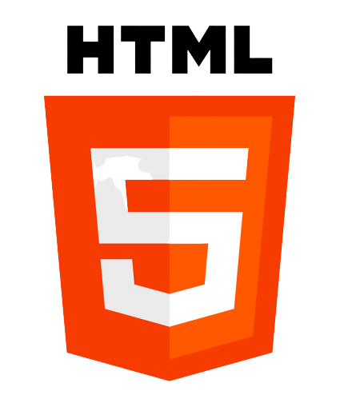
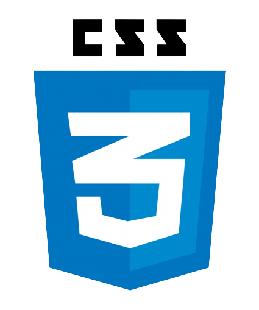
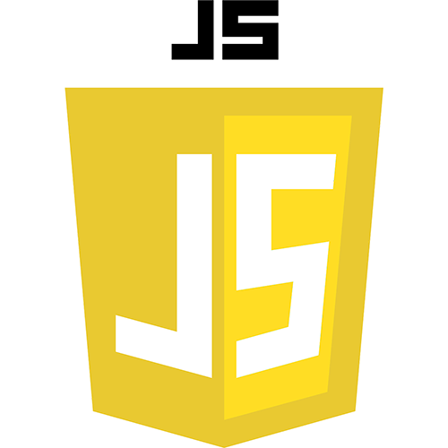

Sobre mim
Prazer, me chamo Yuri Vieira dos Santos, sou um entusiasta e estudante de programação, amo tecnologias de todos os tipos e sou muito comunicativo e extrovertido. Aqui nesta página estou aplicando meus conhecimentos de HTML e CSS para criar um portfólio para mim, mostrando um pouco da minha pessoa e do que sei fazer.
Tenho experiência com JavaScript, trabalho como Analista desenvolvedor em JavaScript, fazendo suporte técnico para um projeto da empresa Cognizant com o Google. Eu cuido de casos que os anunciantes necessitam de códigos para implementar os snippets de conversões do Google Ads ou do Google Analytics, com isso aprendi muito sobre essas ferramentas e com a minha experiência em comunicação acabei melhorando minhas falas para atender os clientes que estavam com dúvidas e/ou precisavam resolver seus problemas
Abaixo estão algumas tecnologias que trabalho atualmente:
- 
- 
- 